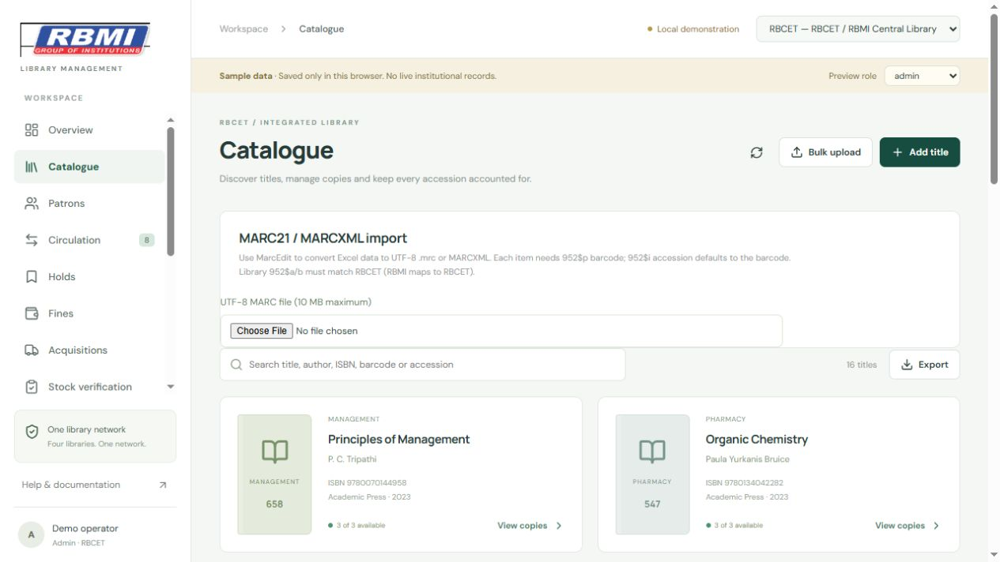

A bibliographic record describes a title/edition. Each physical copy has its own accession, globally unique barcode, shelf, price and status.
How to use this section
Search Catalogue by title, author, ISBN, classification, barcode or accession. Use Show more to reveal further matching cards.
Add title requires title and author. Enter ISBN, publisher, subject, classification/DDC and publication year when known.
Open View copies > Add physical copy. Enter unique accession and barcode, shelf and nonnegative price.
Use Edit title to correct descriptive fields. Use Status with a reason for available, lost, damaged, withdrawn or missing copies. Loaned copies must first be returned.
Use Label to print a Code 128 barcode. Scan-test labels before applying them to books.
For imported copies, Source details shows original item type, collection, accession date, pages, publication place and notes when supplied.
Notes and limits
The provided workbook has barcodes but no separate accession column, so its barcode also serves as the accession.
The controlled import groups consistent descriptions into 9,668 bibliographic records. Regular CSV import reuses a matching non-empty ISBN; inspect editions before using that simpler path.
Screen guide
Captured from the application with sample records. Screen values are examples; your records and permissions may differ.

Screen 1. The catalogue separates bibliographic titles from copies. Use Add title, View copies and Bulk upload as appropriate.